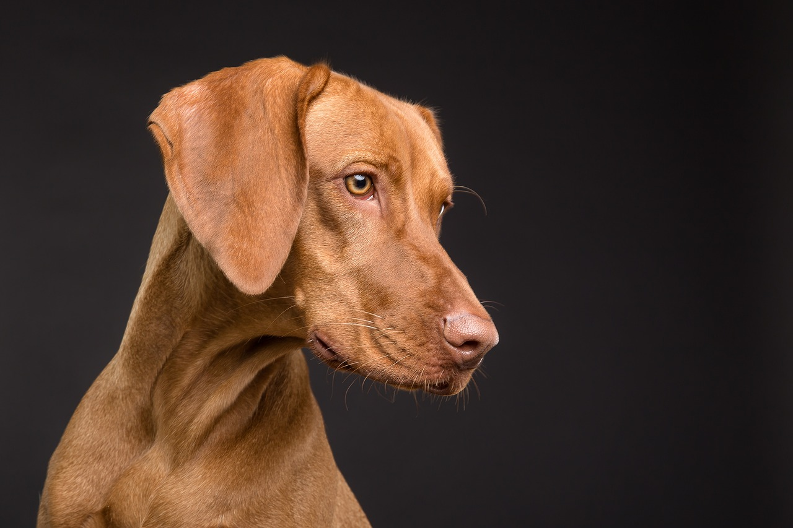
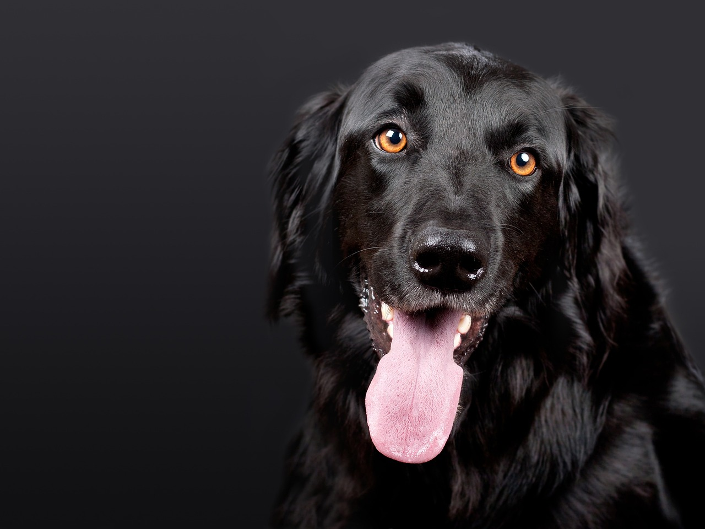

Bienvenido a [Nombre de tu Organización] - Adopta un Amigo Peludo en Granada En [Nombre de tu Organización], creemos en el poder transformador de la conexión entre humanos y perros. Nuestra misión es crear hogares llenos de amor y alegría al facilitar la adopción responsable de perros en la hermosa ciudad de Granada.